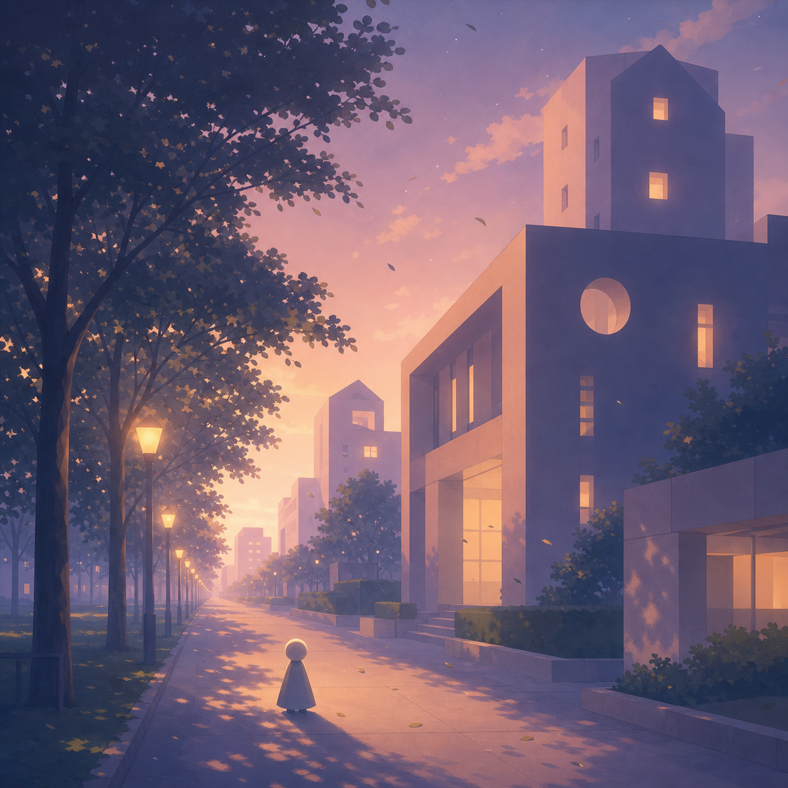
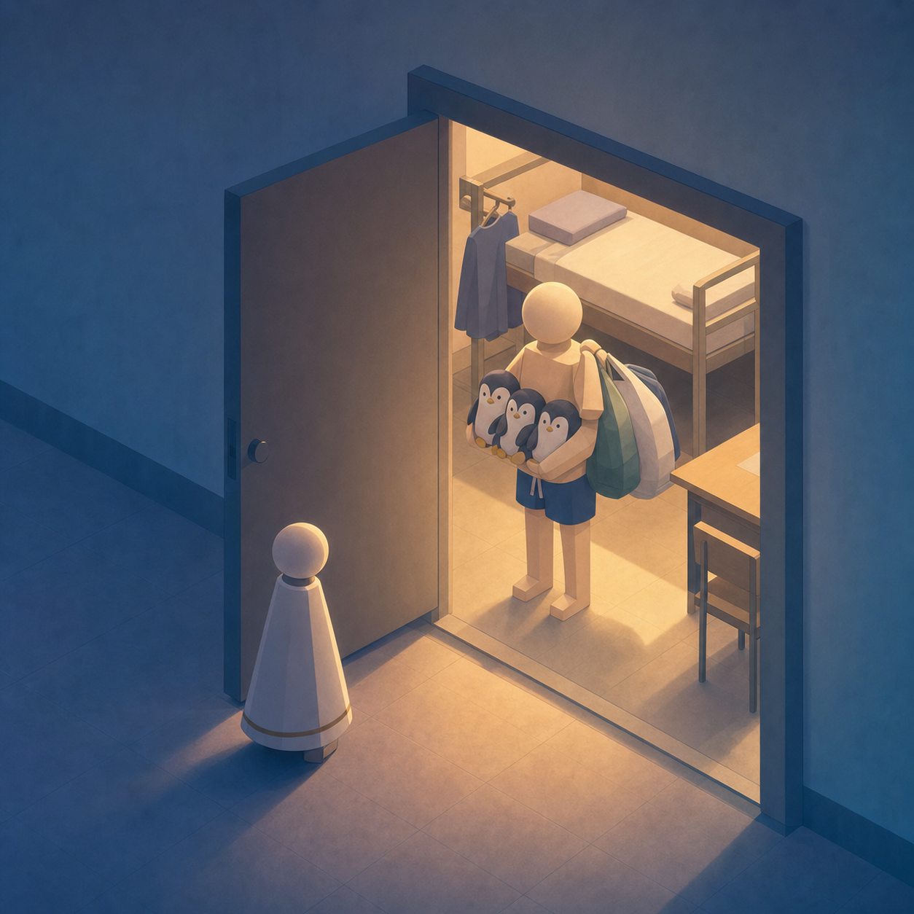
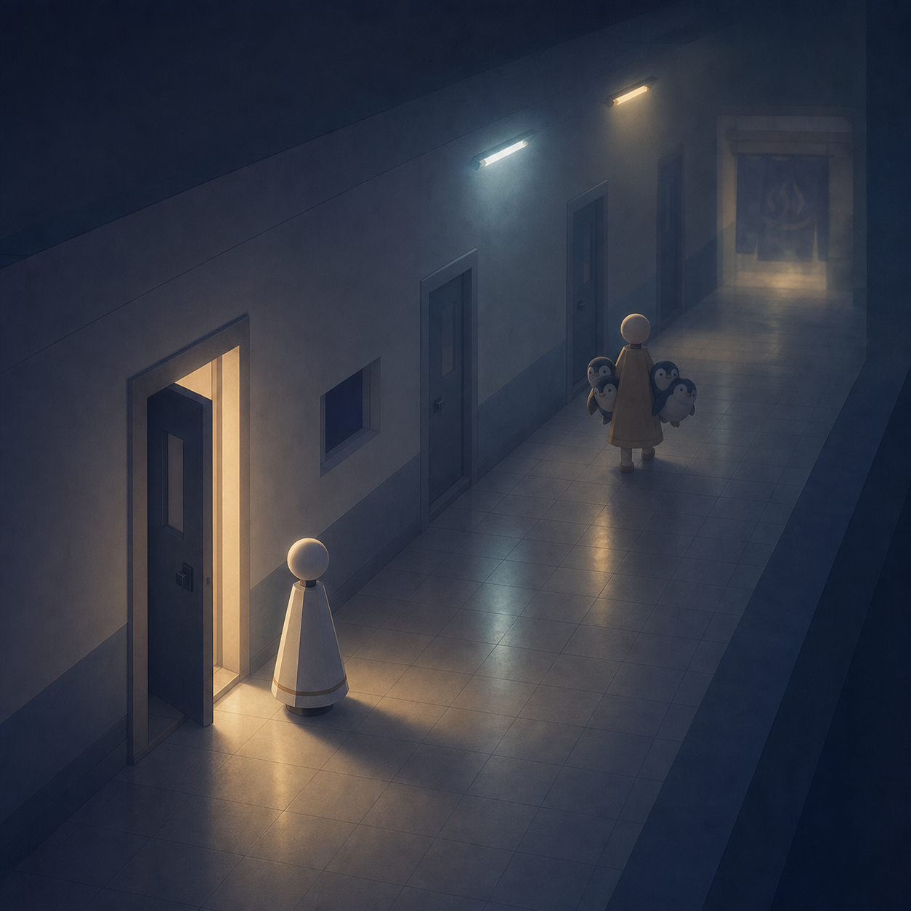
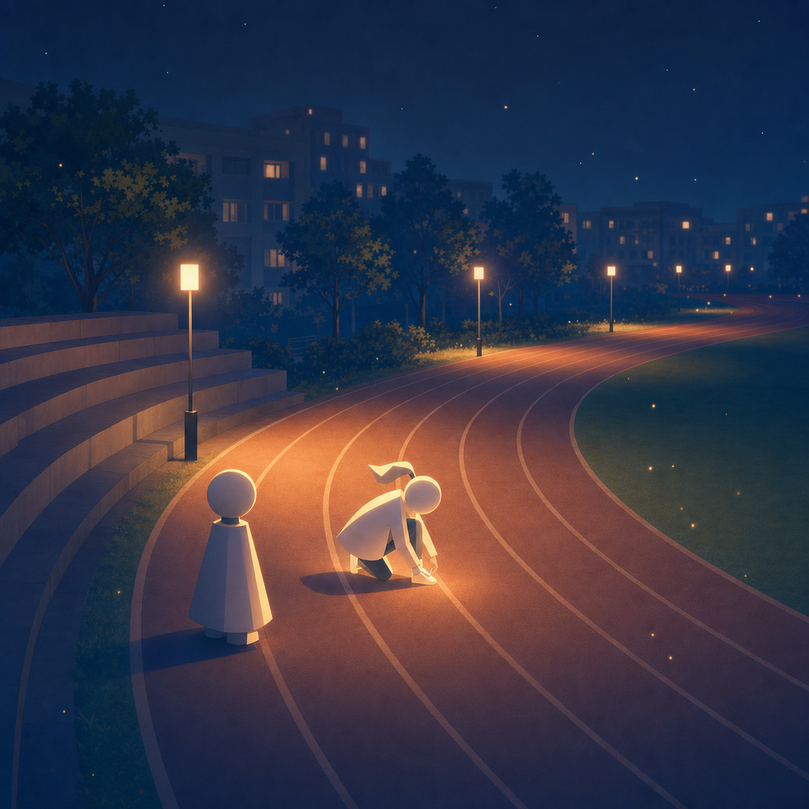
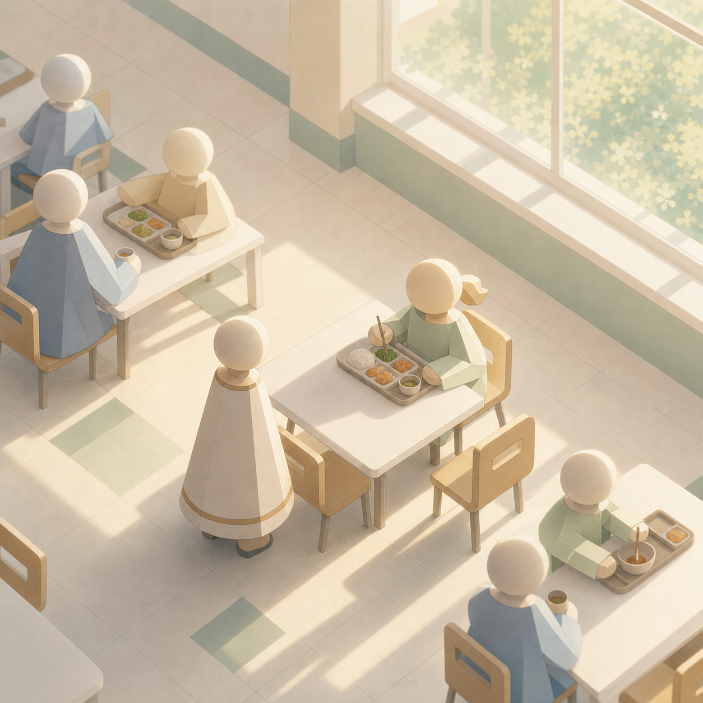
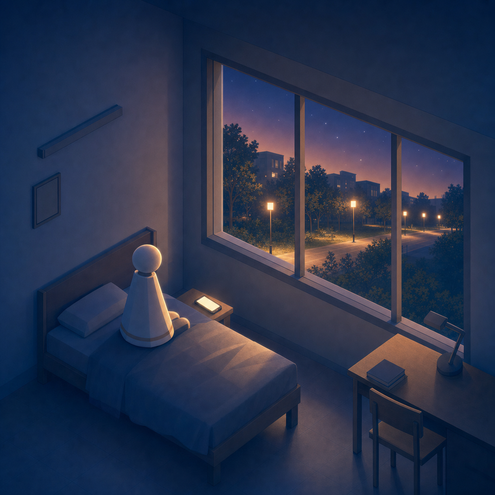

Short Story
夜晚是分界线
一则来自梦境的短篇

回到那所大学
我是在一个傍晚回到那所大学的。
天色微暗，林荫路被晚风吹得沙沙作响。教学楼、宿舍楼、操场，还有那条熟悉得不能再熟悉的小路，一切都和记忆里分毫不差。甚至连空气里，都带着当年潮湿又温热的气味。
我没有感到惊讶。
就好像，我本来就应该在这里。
那天晚上，我回到宿舍。

抱着企鹅去洗澡的人
推开门的一瞬间，我愣住了。
屋里站着一个男生。
他是我“记忆中的室友”。他背对着我，正把几袋衣服往肩上挂。等他转过身，我才看清，他只穿着一条泳裤，赤着上身，怀里抱着四只企鹅玩偶。
那画面荒诞得几乎让人失笑。
可他的神情很平静，甚至带着一点赶时间的不耐烦。
“你这是……要去哪？”我问。
“洗澡啊。”他说。
语气自然得像是在回答一个再普通不过的问题。
我站在门口，没有动。
“我们不是有独立卫浴吗？”
他看了我一眼，眼神像是在看一个突然说胡话的人。
“我一直都是去澡堂。”
澡堂。
那个早在大二就被拆掉的地方。
我还想再说什么，但他已经抱着那几只企鹅，从我身边挤了出去。脚步声很快消失在走廊尽头。

门还开着。
走廊的灯忽明忽暗。
我忽然感到一种轻微的寒意。
那晚，我没有待在宿舍。
我沿着校园慢慢走，试图让自己冷静下来。走到操场边的时候，我遇见了她。

夜跑的人
她是一个我认识的女同学。
她正低头系着鞋带，额头微微出汗。她抬头看见我，笑了一下，说自己准备去跑步。
我看着她，一时间有些说不出话。
因为她瘦了很多。
不是那种“稍微减重”的变化，而是整个人像被重新雕刻过一样。线条干净，神情明亮，连站姿都带着一种轻盈的力量感。
“你……什么时候开始跑步的？”我问。
“每天都跑啊。”她说，“今天打算跑二十公里。”
她说得很轻松。
就好像那只是再普通不过的日常。
我忽然不知道该怎么回应，只能看着她起身，跑进夜色里。
那一刻，我隐约感觉到，有什么东西正在悄悄偏移。
白天的否认
第二天，一切恢复了正常。
课堂上，我提起昨晚的事。
那个“室友”坐在我前排，回头看我，表情困惑。
“我们什么时候住在一起过？”
他的语气很认真。
不是开玩笑，也不是装傻。
是彻底的否认。
我愣住了。
他继续说：“我一直是单人宿舍。”
那一瞬间，我突然意识到，如果再说下去，我会变得像个说胡话的人。
于是我笑了笑，说可能是记错了。
但他看我的眼神，没有因此放松。
反而更陌生了。

我又去找那位女同学。
她坐在食堂里，正在慢慢吃饭。
她还是原来的样子：微胖，不爱运动，连坐姿都带着一点懒散。
“你最近在跑步吗？”我试探着问。
她愣了一下，笑了。
“我？跑步？你在说什么。”
她的反应太自然了。
自然得让我开始怀疑，昨晚的记忆本身是否可靠。
他们不懂 INTJ
中午，我们几个人一起吃饭。
话题不知道怎么转到了性格测试。我下意识说了一句：
“我们 INTJ 一般都会这样想。”
话音刚落，桌子安静了一瞬。
“INTJ 是什么？”有人问。
其他人也都看着我。
那种目光，不是好奇，而是彻底的不理解。
仿佛我刚刚说的，是一种他们从未听过的语言。
我突然意识到：
不只是他们变了。
连“我”，在这个世界里，也不是原来的我。
推敲
那天傍晚，我们把这些事情拼在一起，反复推敲。
那些细小的错位，那些无法解释的差异，像碎片一样慢慢拼合，最终指向一个荒谬却清晰的答案：
夜晚，是分界线。
一到夜里，我就会进入另一个与现实重叠的世界。
那里的一切都几乎相同。
只是每个人的人生，都偏离了原本的轨道。
她听完之后，沉默了一会儿，然后笑了。
“那你能帮我一个忙吗？”
我看着她。
她说，在“那个世界”里，她有一项检查一直做不了。如果我再次遇见另一个她，希望我可以替她问一问。
这个请求听起来有些奇怪。
但在那一刻，却显得异常合理。
我点了点头。

还差一点
那天晚上，我没有离开宿舍。
我坐在床上，盯着窗外。
天色一点点暗下来。
远处的路灯一盏一盏亮起，像某种无声的倒计时。
我忽然有一种强烈的预感：
只要夜彻底降临，我就会再次进入那个世界。
我会再次见到那个抱着企鹅的男生。
会再次遇见那个在夜里奔跑的她。
也许，这一次，我能得到答案。
天色越来越暗。
黑暗开始吞没天空的边缘。
就在那一刻——
闹钟响了。
声音刺耳而突兀。
我猛地睁开眼。
房间安静，窗外是清晨的光。
一切都结束了。
我坐在床上，盯着手机屏幕。
闹钟已经停止。
世界恢复正常。
可那种“还差一点”的感觉，却迟迟没有消散。
我不知道那个约定有没有被完成。
也不知道，在另一个夜晚的世界里——
是否还有一个“我”，正在继续等待。